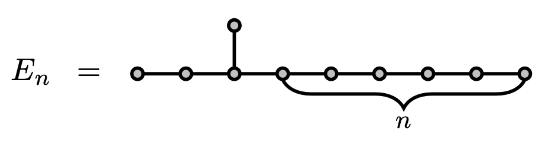

$\lambda^* = \sqrt{\beta}+1/\sqrt{\beta} = $ 2.019800887...
where $\beta$ is real root of $x^3 = x + 1$.
$\lambda^* = \sqrt{\beta}+1/\sqrt{\beta} = $ 2.019800887...
the limit of the largest eigenvalue of
Forbidden subgraphs
* all subgraphs are inducedSpherical two-distance sets
Fundamental problem
Classification and characterization of graphs with bounded eigenvalues (refer to adjacency matrices)
$\mathcal{G}(\lambda) = \{$ graphs with smallest eigenvalue $\ge -\lambda \}$
$\mathcal{H}(\lambda) = \{$ graphs with spectral radius $\le \lambda \}$
$\mathcal{G}(\lambda) = \{$ graphs with smallest eigenvalue $\ge -\lambda \}$
$\mathcal{H}(\lambda) = \{$ graphs with spectral radius $\le \lambda \}$
Observation: Cauchy interlacing theorem implies
$\mathcal{G}(\lambda)$ and $\mathcal{H}(\lambda)$ are closed under taking subgraphs
Question: Define $\mathcal{G}(\lambda)$ or $\mathcal{H}(\lambda)$ by a finite set of forbidden subgraphs?
$\mathcal{H}(2) = \{$ graphs with spectral radius $\le 2 \}$

Smith 1970: connected graphs in $\mathcal{H}(2)$ that are maximal under taking general subgraphs
Cvetković, Doob and Gutman 1982 $\mathcal{H}(2)$ can be defined by 18 forbidden subgraphs
$\mathcal{G}(2) = \{$ graphs with smallest eigenvalue $\ge -2 \}$
$\mathcal{H}(2) = \{$ graphs with spectral radius $\le 2 \}$
$\mathcal{G}(2)$ is much richer and more complex
contains $\mathcal{H}(2)$ and all the line graphs
Cameron, Goethals, Seidel, and Shult: For every connected graph, it is in $\mathcal{G}(2)$ if and only if it is represented by a subset of $D_n$ or $E_8$ (root systems).
$\mathcal{G}(2) = \{$ graphs with smallest eigenvalue $\ge -2 \}$
Rao, Singhi and Vijayan $\mathcal{G}(2)$ can be defined by forbidden subgraphs with $\le 37$ vertices
Kumar, Rao and Singhi perfected $37$ to $10$
Bussemaker and Neumaier $\mathcal{G}(2)$ can be defined by 1812 forbidden subgraphs
Beyond $\lambda = 2$
Cvetković, Doob and Gutman 1982 Classification of graphs in $\mathcal{H}(\sqrt{2+\sqrt{5}})$ (about 2.05817)
Bussemaker and Neumaier 1992 For which $\lambda \in \mathbb{R}$ can $\mathcal{G}(\lambda)$ or $\mathcal{H}(\lambda)$ be defined by a finite set of forbidden subgraphs?
"however, these seem to be very difficult problems"
Bussemaker and Neumaier 1992 For which $\lambda \in \mathbb{R}$ can $\mathcal{G}(\lambda)$ or $\mathcal{H}(\lambda)$ be defined by a finite set of forbidden subgraphs?


J. and Polyanskii 2020 settled $\mathcal{H}(\lambda)$
$\lambda < \sqrt{2+\sqrt{5}} \approx 2.05817$ but $\lambda \neq \lambda_2^*, \lambda^*_3, \lambda^*_4, ...$
J. and Polyanskii 2022+ settled $\mathcal{G}(\lambda)$
$\lambda < \lambda^* \approx 2.019801$
J. and Polyanskii 2020 settled $\mathcal{H}(\lambda)$
$\lambda < \sqrt{2+\sqrt{5}} \approx 2.05817$ but $\lambda \neq \lambda_2^*, \lambda^*_3, \lambda^*_4, ...$
J. and Polyanskii 2022+ settled $\mathcal{G}(\lambda)$
$\lambda < \lambda^* \approx 2.019801$
$\lambda_m^*$ is the limit of the largest e.v. of $E_{m,n}$ as $n \to\infty$

$\lambda_m^*$ increases to $\sqrt{2+\sqrt{5}}$ and $\lambda^* = \lambda^*_2$
J. and Polyanskii 2022+ settled $\mathcal{G}(\lambda)$
$\lambda < \lambda^* \approx 2.019801$
Break into three cases
$\lambda < 2$
$2 \le \lambda < \lambda^*$
$\lambda \ge \lambda^*$
Goal: If $\lambda < 2$ then $G(\lambda)$ can be defined by a finite set of forbidden subgraphs
Really want to forbid $C$ and $D$ but not quite ...

Fact (van Rooij and Wilf): Every graph that contains neither $C$ nor $D$ as a subgraph is a line graph.
Ramsey-type result
For every $F$ and $k, l, m$ there exists $N$ such that for every connected graph $G$ with more than $N$ vertices, if no member in $\{S_k\} \cup \mathcal{X}(F, l, m)$ is a subgraph of $G$ then $F$ is not a subgraph of $G$.
Here, $\mathcal{X}(F, l, m)$ consists of

Step 1: For every $\lambda < 2$ there exist $l, m$ such that both $\mathcal{X}(C, l, m)$ and $\mathcal{X}(D, l, m)$ are disjoint from $\mathcal{G}(\lambda)$
Step 2: Forbid $\{S_4\} \cup \mathcal{X}(C, l, m) \cup \mathcal{X}(D, l, m)$. Roughly speaking, only line graphs are left.
Step 3: Only line graphs of rooted trees are left, where the rooted trees are of bounded depth, and all the vertices but the root have bounded degree
Step 3: Only line graphs of rooted trees are left, where the rooted trees are of bounded depth, and all the vertices but the root have bounded degree
Forbid line graphs of such trees, where trees are minimal under taking subgraphs
Are there only finitely many such minimal trees $H$?
Step 3.1: Enumerate bounded trees $T_1, T_2, \dots, T_n$
Step 3.2: Encode each $H$ by $(t_1, \dots, t_n)$ where $t_i$ is the # of occurrences of $T_i$ as a connected component in the graph obtained by removing the root from $H$.
Are there only finitely many such minimal trees $H$?
Step 3.1: Enumerate bounded trees $T_1, T_2, \dots, T_n$
Step 3.2: Encode each $H$ by $(t_1, \dots, t_n)$ where $t_i$ is the # of occurrences of $T_i$ as a connected component in the graph obtained by removing the root from $H$.
Observation: These encodings form an antichain
Dickson's lemma The poset $(\mathbb{N}^n, ≤)$, in which $(a_1, \dots, a_n) ≤ (b_1, \dots , b_n)$ if and only if $a_i ≤ b_i$ for every $i$, does not contain infinite antichains.
Goal: If $2 \le \lambda < \lambda^*$ then $G(\lambda)$ can be defined by a finite set of forbidden subgraphs
Really want to forbid

Goal: If $2 \le \lambda < \lambda^*$ then $G(\lambda)$ can be defined by a finite set of forbidden subgraphs
These are forbidden subgraphs $G_1, \dots, G_{31}$ for $\mathcal{D}_{\infty}$, the family of graphs representable by a subset of $D_n$.
Step 1: For every $\lambda < 2$ there exist $l, m$ such that $\mathcal{X}(G_i, l, m)$ is disjoint from $\mathcal{G}(\lambda)$ for every $i$computer assisted proof
Step 2: Forbid $\{S_5\} \cup \bigcup_{i=1}^{31}\mathcal{X}(G_i, l, m)$. Roughly speaking, only graphs in $\mathcal{D}_\infty$ are left.
Goal: If $\lambda \ge \lambda^*$ then $G(\lambda)$ cannot be defined by a finite set of forbidden subgraphs
Suffices to show
$\{\lambda \in \mathbb{R} \colon -\lambda $ is the smallest e.v. of a graph $\}$
is dense in $(\lambda^*, \infty)$
Shearer: it is dense in $(\sqrt{2+\sqrt{5}},\infty)$
Need to fill the gap between $\lambda^*$ and $\sqrt{2+\sqrt{5}}$
Need to fill the gap between $\lambda^*$ and $\sqrt{2+\sqrt{5}}$
Rowing graph

Key feature: when the coxswain $v_c$ is removed, a rowing graph becomes a line graph of a caterpillar tree
Generalization to signed graphs
$G^\pm(\lambda) = \{$ signed graphs with smallest e.v. $\ge -\lambda\}$
J. and Polyanskii 2022+ settled $G^\pm(\lambda)$: $\lambda < \lambda^*$
$G^\mp(\lambda) = \{$ signed graphs with largest e.v. $\le \lambda\}$
Corollary settled $G^\mp(\lambda)$: $\lambda < \lambda^*$
Application
For every $λ < λ^*$, there exists $n$ such that for every symmetric integer matrix $A$ whose diagonal entries are all zero, if $A$ has an eigenvalue less than $-λ$, then so does one of its principal submatrix of order at most $n$. The same conclusion does not hold for any $λ ≥ λ^*$
Vijayakumar: for $λ = 2$ the natural number $n$ can be as small as (but no smaller than) $10$.
Forbidden subgraphs
Spherical two-distance sets
Spherical two-distance sets
$\{ v_1, \dots, v_N \in \mathbb{R}^d \colon$ each $v_i$ is a unit vector
and $\langle v_i, v_j \rangle = \alpha$ or $\beta\}$
Focus on fixed $-1 \le \beta < 0 \le \alpha < 1$
$N_{\alpha, \beta}(d) = $ max size of spherical $\{\alpha,\beta\}$-code in $\mathbb{R}^d$
$N_{\alpha, \beta}(d) = $ max size of spherical $\{\alpha,\beta\}$-code in $\mathbb{R}^d$
Problem Determine $N_{\alpha, \beta}(d)$ for large $d$
In particular, determine $\lim_{d \to \infty} N_{\alpha, \beta}(d)/d$
J., Tidor, Yuan, Zhang, Zhao 2021 settled the "equiangular" case $\beta = -\alpha$

$N_{\alpha, \beta}(d) = $ max size of spherical $\{\alpha,\beta\}$-code in $\mathbb{R}^d$
Problem Determine $\lim_{d \to \infty} N_{\alpha, \beta}(d)/d$
J., Tidor, Yuan, Zhang, Zhao 2022+
Constructed a lower bound on $N_{\alpha, \beta}(d)$
Conjectured the lower bound is tight for large $d$
Proved matching upper bound when $\alpha + 2\beta < 0$ (equiangular-ish) or $(1-\alpha)/(\alpha-\beta) = 1, \sqrt2, \sqrt3$
How to get an upper bound on $N_{\alpha, \beta}(d)$?
Step 1: Associate a graph $G$ to a spherical $\{\alpha,\beta\}$-code
Step 2: There exists $\Delta$ such that $G$ after removing at most $\Delta$ vertices, is a $\Delta$-modification of a complete $p$-partite graph $K$, where $p = \lfloor -\alpha/\beta \rfloor + 1$
A graph $G$ is a $∆$-modification of another graph $H$ on the same vertex set if the symmetric difference of $G$ and $H$ has maximum degree at most $∆$Step 3: Work with the signed graph whose signed adjacency matrix defined by $A_G - A_K$
Step 1: Associate a graph $G$ to a spherical $\{\alpha,\beta\}$-code
Step 2: There exists $\Delta$ such that $G$ after removing at most $\Delta$ vertices, is a $\Delta$-modification of a complete $p$-partite graph $K$, where $p = \lfloor -\alpha/\beta \rfloor + 1$
Step 3: Work with the signed graph $G^\pm$ defined by $A_G - A_K$
Forbidden subgraph framework
Roughly speaking, given a finite family of $\mathcal{H}$ of signed graphs with largest e.v. more than $(1-\alpha)/(\alpha-\beta)$, can choose $\Delta$ such that $G^\pm$ does not contain any member in $\mathcal{H}$ as a subgraph
$G^\mp(\lambda) = \{$ signed graphs with largest e.v. $\le \lambda\}$
$G^\mp(\lambda)$ can be defined by a finite set of forbidden signed subgraphs if and only if $\lambda < \lambda^*$
Application A matching upper bound on $N_{\alpha, \beta}(d)$ for large $d$ when $(1-\alpha)/(\alpha-\beta) < \lambda^*$
Open problems
Problem A: Classify all the connected graphs with smallest eigenvalue in $(-λ^*,-2)$. In particular, classify those that have sufficiently many vertices.
Problem B: Problem A for signed graphs
Problem C: Find the smallest $λ ∈ \mathbb{R}$ such that the set of spectral radii of signed graphs is dense in $[λ,∞)$, and classify all the connected signed graphs with spectral radius in $(2,λ)$.
Open problems
Problem D: Prove matching upper bound for $N_{\alpha, \beta}(d)$ when $\alpha + 2\beta \ge 0$ and $(1-\alpha)/(\alpha-\beta) \ge \lambda^*$